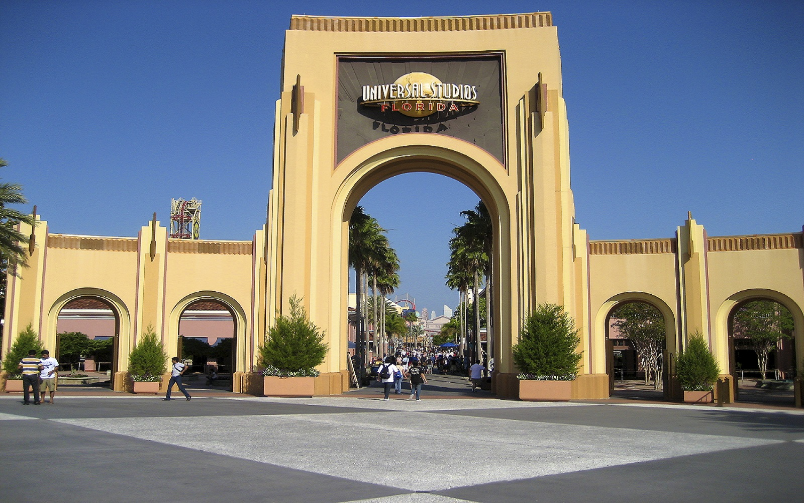
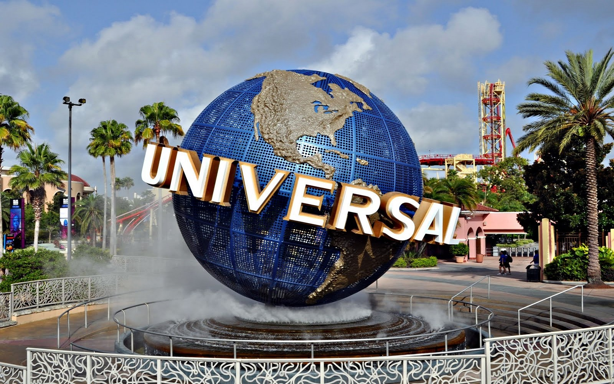

El increíble parque temático de Magic Kingdom es la esencia de Walt Disney World. Ride The Movies es el slogan principal de este parque temático, enteramente dedicado al mundo del cine y la televisión. Apoyado en franquicias híper-populares y con una renovación intensa durante los últimos años, Universal Studios año a año se acerca a disputar lugares que sólo parecían reservados para los parques Disney. Todo cambió tras el estrenó Harry Potter: Diagon Alley, uno de los más elaborados sectores temáticos de todo el área de Orlando y con el tren Hogwarts Express viajando desde allí hacia su sección hermana en Islands of Adventure. Minions, The Simpsons, Fast & Furious, Transformers y muchos otros favoritos forman parte de la oferta imperdible que este parque regala a los visitantes. La tecnología de punta con lo último en atracciones más algunas experiencias de gran adrenalina completan la receta que Universal utiliza para destacarse como uno de los mejores.
El increíble parque temático de Magic Kingdom es la esencia de Walt Disney World. Promocionado como un parque temático de nueva generación, abrió sus puertas en el año 1999 y logró transformar a Universal Orlando en un verdadero complejo del entretenimiento. Allí nacieron las verdaderas aspiraciones de la compañía del Globo para competir seriamente con Walt Disney World. Pensado para rivalizar con Magic Kingdom, la realidad indica que son parques que tienen sólo algunos puntos de contacto y un concepto diferente: mientras que el reino mágico es pura fantasía Islands hace honor a su nombre, y es pura aventura. Apenas pongan un pie adentro percibirán una ambientación que combina música que pudiera funcionar como perfecta banda sonora de una película de aventuras, la predominancia de los tonos marrones de piedras y construcciones con estilo africano y un sinnúmero de detalles como tambores, fuentes, pinturas y referencias a regiones como Marruecos, Estambul o Timbuktú. Luego las islas o regiones temáticas los trasladarán desde el universo Marvel, al mundo de las caricaturas, la prehistoria jurásica, los colores de Dr. Seuss y por supuesto… Harry Potter. A partir de 2010, la llegada de la nueva región/isla íntegramente dedicada a Harry Potter llevó el parque a otra dimensión y varias veces fue considerado por la crítica el mejor parque de Orlando. La tecnología de punta con lo último en atracciones más algunas experiencias de gran adrenalina completan la receta que Islands utiliza para destacarse como uno de los mejores del área de Orlando.
El histórico parque de agua de Universal, llamado Wet N’ Wild, lucía anticuado y había bajado al cuarto puesto de preferencias en Orlando. Universal tomó nota y en 2016 anunció el cierre de Wet N’ Wild y la construcción de un nuevo parque de agua llamado Volcano Bay. Ubicado adyacente al hotel Cabana Bay Resort, el parque abrió sus puertas en mayo de 2017 y su objetivo fue revolucionar la industria de los parques acuáticos. La expectativa de éxito era tan grande que Universal califica a Volcano como su «tercer parque temático en Orlando», intentando quitarlo de la categoría «parque de agua» y equipararlo a sus dos parques principales. El parque tiene en una historia (los Waturi), muestra un ícono imponente (el Volcán), un concepto novedoso (la espera virtual en todas sus atracciones) y un apoyo tecnológico (el Tapu Tapu). Sobre esos pilares Universal construyó su rotundo éxito.
Al contrario de lo que sucede con Walt Disney World, el centro comercial de Universal Orlando se ubica adyacente a sus parques principales. Universal‘s Citiwalk es un compacto y pintoresco paseo de compras, entretenimiento y comida que justifica al menos algunas horas en el plan de viaje para visitarlo y disfrutarlo. En cada una de sus tiendas podrán mercadería propia de la marca Universal así como de las franquicias asociadas (por ejemplo Harry Potter), siempre con una variedad asombrosa. Pero también podrán adquirir vestimenta como remeras, vestimenta deportiva, camperas y hasta ropa interior, juguetes de todo tipo y tamaño de distintas películas que inspiran atracciones en los parques , recuerdos como varitas de Harry, bufandas de Gryffindor, libros del Dr. Seuss, peluches de Minions y hasta huevos de algún dinosaurio de Jurassic Park. Para comer las opciones son espectaculares y durante la cena se transforman en una extensión del día de parque en Universal Studios o Islands of Adventure.